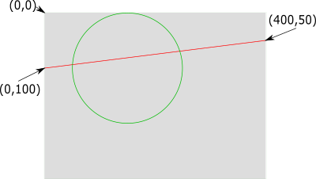
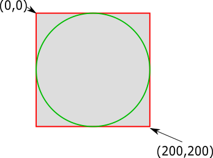

Oltre che utilizzare componenti già fatti o caricare immagini da disco adesso vorremmo disegnare qualcosa noi da programma... non è una esigenza così singolare!
In verità c'è un componente già fatto che ha lo stesso uso di una tela da disegno e, coincidenza, si chiama Canvas (per i più precisi il suo nome completo è javafx.scene.canvas.Canvas), questo componente lo possiamo piazzare in una parte della finestra a nostra scelta esattamente come facciamo con un Button o un TextField e ci consente di disegnarci su linee, cerchi, punti e via di seguito.
Vediamo direttamente un esempio:
import javafx.application.Application;
import javafx.scene.Scene;
import javafx.scene.canvas.Canvas;
import javafx.scene.canvas.GraphicsContext;
import javafx.scene.layout.GridPane;
import javafx.scene.paint.Color;
import javafx.stage.Stage;
public class HelloCanvas extends Application {
@Override
public void start(Stage primaryStage) {
// creiamo un pannello specificando larghezza e altezza
Canvas tela = new Canvas(300, 260);
// otteniamo l'oggetto che ci permette di disegnare
GraphicsContext gc = tela.getGraphicsContext2D();
gc.setFill(Color.YELLOW);
gc.setLineWidth(1);
gc.fillOval(50, 50, 200, 200);
gc.setFill(Color.BLACK);
gc.fillOval(100, 100, 20, 20);
gc.fillOval(180, 100, 20, 20);
gc.setStroke(Color.RED);
gc.setLineWidth(8);
gc.strokeLine(100, 200, 150, 220);
gc.strokeLine(150, 220, 200, 200);
GridPane pannello = new GridPane();
// inseriamo il nostro canvas nella finestra
pannello.add(tela, 0, 0);
Scene scene = new Scene(pannello);
primaryStage.setTitle("Hello Canvas!");
primaryStage.setScene(scene);
primaryStage.show();
}
public static void main(String[] args) {
launch(args);
}
}
Come avrai notato non possiamo disegnare direttamente su un canvas ma ci serve ottenere un oggetto di tipo GraphicsContext che abbiamo chiamato gc.
Nell'esempio qui sopra disegnamo con diversi colori linee e ovali di spessori diversi, un oggetto GraphicsContext ha molte istruzioni per disegnare diversi tipi di forme geometriche come linee, rettangoli cerchi (sia pieni che vuoti) e molte altre.
Alcuni metodi
La prima cosa da fare è la creazione della tela tramite Canvas tela = new Canvas(500, 400); dove 500
sta a indicare la larghezza della tela ed il 400 l'altezza.
Molto spesso la tela è presente nella finestra insieme ad un form o ad altri elementi. Facciamo l'esempio in cui in una finestra ci siano 4 caselle di testo una sotto l'altra e nella riga ancora sotto un pulsante. In totale 5 righe impegnate. Supponiamo ancora che la tela vogliamo metterla accanto a tale TextField. Dato che la tela è molto più alta di ciascuna casella di testo, nel momento in cui il Canvas lo si aggiunge al pannello gli si deve anche dire quante righe occupa: nel nostro caso 5. Per un risultato ottimale si dovrebbe aggiungere 1 al numero di righe individuato, per questo anziché mettere 5 metteremo 6:
pannello.add(tela, 1, 0, 1, 6);dove la prima coppia di numeri (1 e 0) sono le solite coordinate
per il posizionamento, il successivo 1 indica il numero di colonne occupate ed il 6 terminale il numero di righe.
Il contesto molto spesso può essere utile anche in altri metodi oltre a start() per cui GraphicsContext gc;
lo possiamo mettere nella classe e gc = tela.getGraphicsContext2D(); come solito in start().
Il colore predefinito è il nero. Per modificare il colore della penna si può usare gc.setStroke(Color.GREEN) per impostare
il colore a verde, anziché GREEN si può usare uno dei colori previsti.
Per modificare il colore del riempimento usa gc.setFill(Color.GREEN) con le stesse considerazioni di prima.
Per disegnare una linea usa gc.strokeLine(inizioX, inizioY, arrivoX, arrivoY); in cui inizioX è la distanza dell'inizio della
linea dal bordo sinistro, inizioY è la distanza dal bordo superiore dell'inizio della riga, arrivoX è la distanza sempre dal bordo
sinistro della fine della riga e fineY è la distanza sempre dal bordo superiore della fine della riga.
Il bordo di un rettangolo si disegna con gc.strokeRect(inizioX, inizioY, larghezza, altezza); in cui inizioX è la distanza
del lato sinistro del rettangolo dal bordo sinistro della tela, inizioY è la distanza tra il bordo superiore del rettangolo e il bordo superiore
della tela, larghezza è la larghezza del rettangolo e altezza è l'altezza di tale rettangolo.
Per disegnare un rettangolo pieno
utilizza gc.fillRect(inizioX, inizioY, larghezza, altezza); in cui i parametri sono gli stessi di strokeRect().
Il bordo di una ellisse può essere disegnata con gc.strokeOval(inizioX, inizioY, larghezza, altezza); in cui inizioX è la distanza
del lato sinistro dell'ellisse dal bordo sinistro della tela, inizioY è la distanza tra il bordo superiore dell'ellisse e il bordo superiore
della tela, larghezza è la larghezza dell'ellisse e altezza è l'altezza di tale ellisse.
Per disegnare una ellisse piena
utilizza gc.fillOval(inizioX, inizioY, larghezza, altezza); in cui i parametri sono gli stessi di strokeOval(). Se vuoi disegnare
un cerchio basta dare le misure di larghezza e altezza con lo stesso valore.
Un testo può essere scritto o mostrando solo il contorno delle lettere che lo compongono oppure riempendo le lettere. Il colore che verrà usato sarà
setStroke() per il primo caso e setFill() per il secondo. In tutti e due i casi è possibile impostare il tipo e la misura del carattere
tramite c.setFont(new Font("nomeCarattere", misura)); dove nomeCarattere è il nome del font che si vuole usare come Arial o Verdana o
Palatino, ecc. mentre misura indica il numero di pixel di grandezza, quindi può essere per esempio 12 oppure 14 oppure 50...
Per il testo con caratteri bordati usa c.strokeText(testo, inizioX, inizioY); in cui testo è la stringa contenente il testo da visualizzare,
inizioX è la distanza dell'inizio del testo dal bordo sinistro, inizioY è la distanza dal bordo superiore della parte alta del testo.
Per il testo con i caratteri riempiti usa c.fillText(testo, inizioX, inizioY); in cui i parametri sono gli stessi di strokeText().
Per inserire una immagine prima di tutto va inserita l'immagine nel progetto. Per fare questo prendi l'icona dell'immagine e trascinala (in Eclipse) sopra il
pacchetto (non il progetto) che stai lavorando, quando stai lì sopra, prima che rilasci comparirà un simbolo +, rilascia e comparirà una finestra. Puoi
dirgli di eseguire la copia e vedrai che tale immagine comparirà nel pacchetto insieme alle classi che hai creato. A questo punto nel programma JavaFX va detto che
vuoi usarla tramite Image immagine = new Image(percorso); dove percorso è il nome del pacchetto seguito da una barra (/) e dal
nome del file comprendente l'estensione; ad esempio se il pacchetto fosse it.ittfoligno.terzal e il nome del file fosse dolomiti.jpg andrai a
scrivere Image immagine = new Image("it/ittfoligno/terzal/dolomiti.jpg");. Fatto questo la puoi posizionare nella tela tramite
c.drawImage(immagine, inizioX, inizioY); in cui inizioX è la distanza del bordo sinistro dell'immagine dal bordo sinistro della tela,
inizioY è la distanza tra il bordo superiore dell'immagine e il bordo superiore della tela.
Le coordinate nell'oggetto Canvas
Le coordinate funzionano come quello del piano cartesiano con alcune cose da tenere a mente:
- L'angolo in alto a sinistra del canvas è il punto (0,0), tutta la parte disegnata avente valori minori di 0 non sarà visibile
- L'asse delle X cresce verso destra (come per il piano cartesiano usuale), la parte disegnata oltre la larghezza del canvas non sarà visibile
- L'asse delle Y cresce verso il basso (al contrario del piano cartesiano usuale), la parte disegnata oltre l'altezza del canvas non sarà visibile
Cerchio e linea
Nel disegno qui sotto (un Canvas di dimensioni 400x300) abbiamo 2 elementi:
- Una linea rossa che parte dal punto (0,100) e arriva al punto (400,50)
- Il cerchio verde in realtà è una ellisse, parte dal punto (50,0) (attenzione: non è il centro ma l'angolo in alto a sinistra del rettangolo che lo contiene) è larga 200 e alta 200

gc.setLineWidth(1); gc.setStroke(Color.RED); gc.strokeLine(0, 100, 400, 50); gc.setStroke(Color.GREEN); gc.strokeOval(50, 0, 200, 200);
Cerchio e quadrato
In questo altro disegno che usa un Canvas 200x200 abbiamo un quadrato rosso di lato 200 e un cerchio verde di diametro 200:
gc.setLineWidth(2); gc.setStroke(Color.RED); gc.strokeRect(0, 0, 200, 200); gc.setStroke(Color.GREEN); gc.strokeOval(0, 0, 200, 200);

Effetti speciali
Proviamo a modificare il programma precedente inserendo in start
un pulsante e l'usuale codice per gestire la sua pressione:
pulsante.setOnAction( e -> clickEffetto() );
Inseriamo poi prima della chiusura della classe il seguente frammento di codice:
public void clickEffetto(){
gc.applyEffect(new GaussianBlur(20));
}
Siccome l'oggetto gc viene usato sia in start che in clickEffetto dovremo anche spostare la sua dichiarazione (soltanto la dichiarazione!) al livello di classe (fuori da start).
Ora che il programma non ha più errori: che succede se si preme il pulsante?